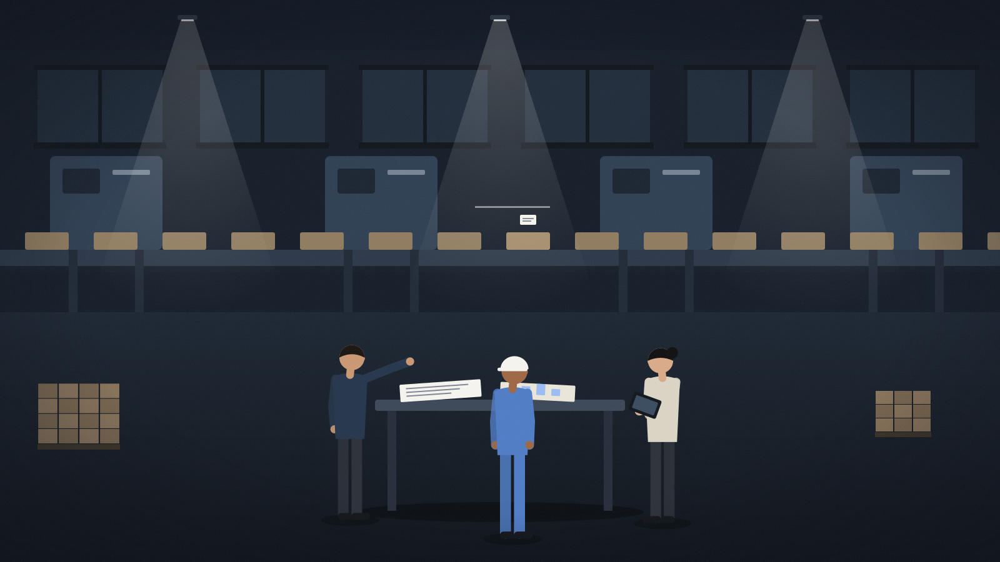

Industries · Global Supply Chain
Build a business that can respond when plans change.
Connect commercial commitments with operational decisions. Help teams understand disruption, compare practical alternatives, and coordinate a recovery.

Illustrative business moment
A supply interruption puts production and customer commitments at risk.
How a first move could take shape
- Delay reported
- Affected orders and commitments identified
- Practical alternatives compared
- Planner approval
- Changes made and confirmed
The highlighted step is where people review and decide.
Measures to agree
- Time to a feasible recovery plan
- Planner acceptance
- Expedite cost against a baseline
- Service performance for the evaluated scope
Proposed. A proposed application area. It does not describe customer deployments, sector authorizations, or measured results.
Go deeper.
The business priority behind this example, and the technical detail for evaluators.